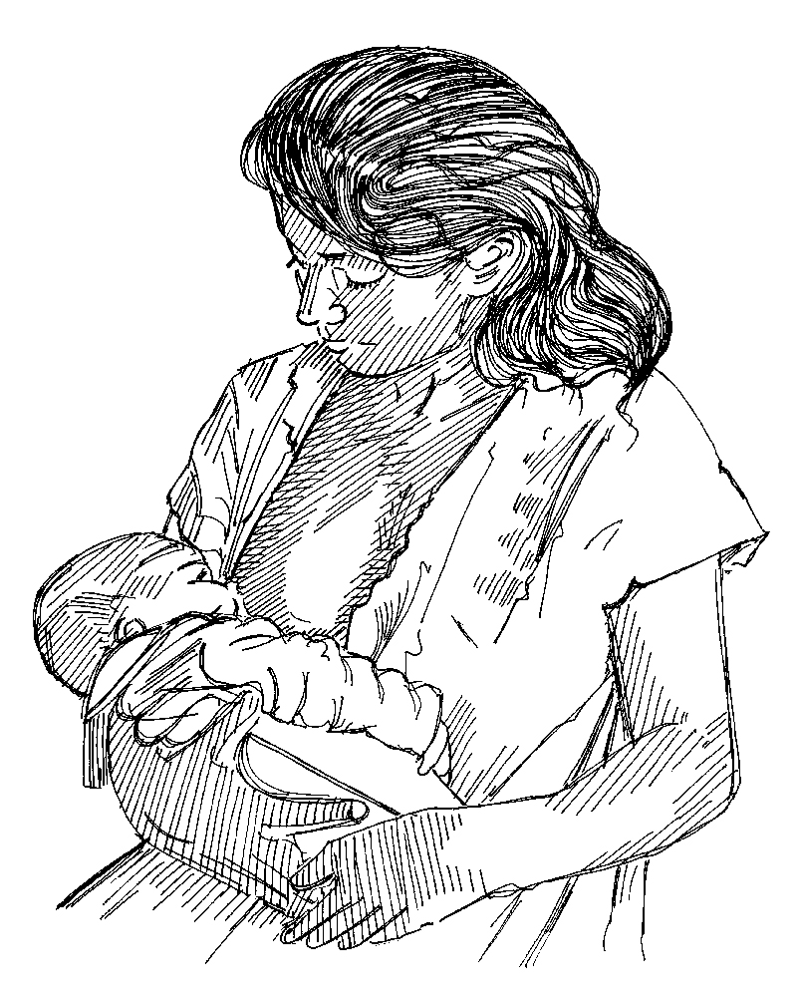

Overview
- Breastfeeding can save the lives of babies and young children in diarrhoea epidemics.
- It is always good to continue breastfeeding in epidemics because breast milk is a clean, nutritious and cheap food for babies.
Why breastfeed?
- Breast milk is the best food for babies in the first six months of their lives.
- Breast milk immediately after birth protects the baby from infections and should not be discontinued.
- In diarrhoea epidemics, exclusive breastfeeding of babies less than six months of age can save their lives from killer diarrhoea and cholera.
What you need to know
- Find out which community health workers and traditional birth attendants are promoting breastfeeding and work with them.
- Familiarize yourself with any local cultural beliefs and practices that are obstacles to exclusive breastfeeding.
- Get to know all the families in your area that have babies less than six months old.
- Bottle-feeding can be dangerous if bottles or water used to prepare powdered milk are not very clean or are contaminated with germs. Always advise mothers to breastfeed.
What to do
- During social mobilization activities, and house-to-house visits, or when promoting health, let mothers know that exclusive breastfeeding protects their babies from diarrhoeal diseases and can prevent death.
- Talk to community and religious leaders and to fathers about the importance of breastfeeding. Ask for their help to persuade mothers to breastfeed.
- Repeat the same message: breastfeeding saves the lives of babies in diarrhoea epidemics. Talk to women to find out what support they need and the difficulties they face in continuing to breastfeed. Work with women and health workers to try to resolve their problems and concerns.
- After the epidemic is over, keep working to encourage breastfeeding.

Breastfeed exclusively from birth to six months of age. After this age, introduce appropriate food while continuing to breastfeed.